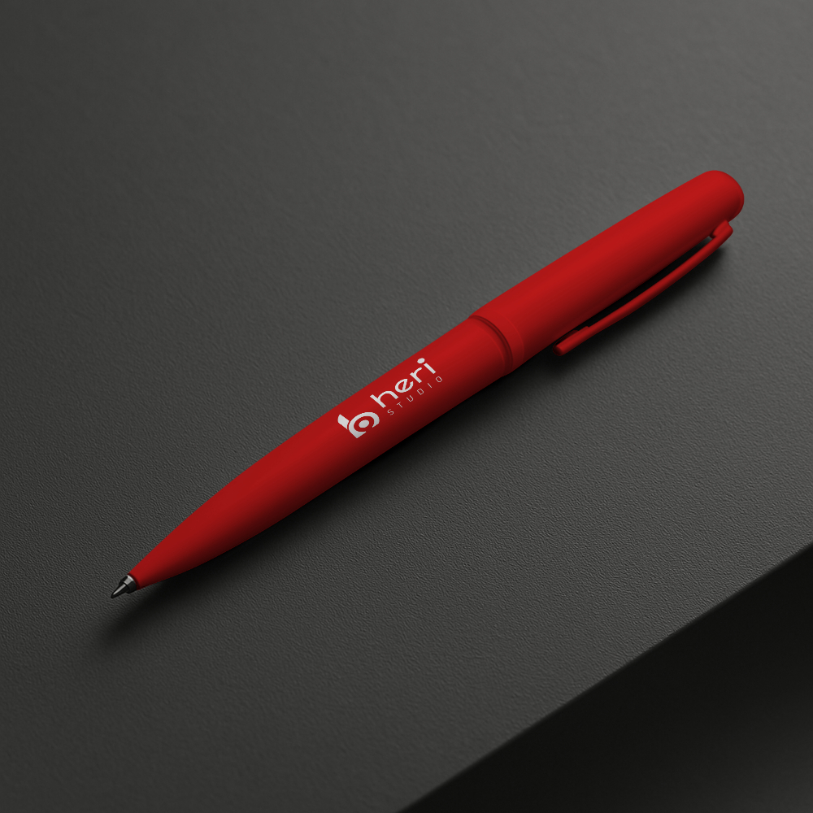
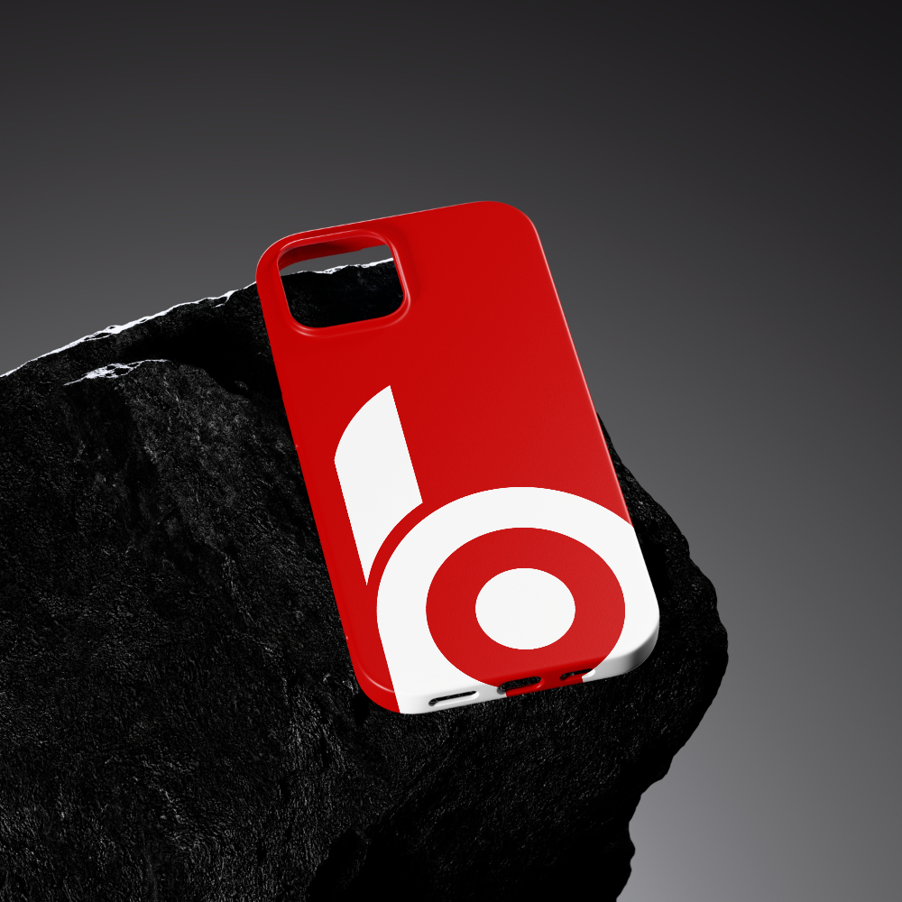
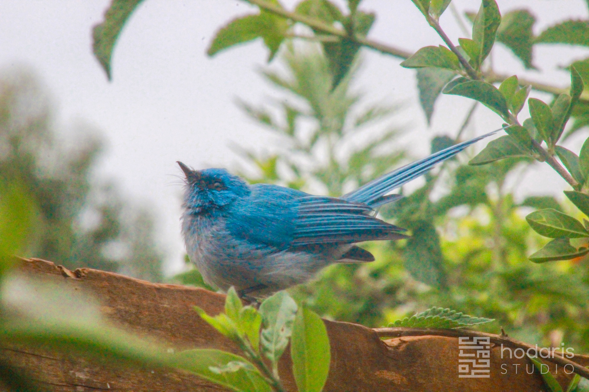

BOOKS & PUBLICATIONSBooks that stay with you after the last page
Explore thoughtful appraisals of ideas, writing, practical value and the readers a book may serve.
Explore reading notes
The Hodaris review desk
Considered perspectives on the things we read, watch, use and experience — with context to help you decide what deserves your time.
Explore reviewsMore than a score
We look at the details that matter: what something offers, who it may suit, where it falls short and what to consider before you choose. Our reviews aim to be clear, fair and useful.
Browse the review desk
Showing all review topics

BOOKS & PUBLICATIONSExplore thoughtful appraisals of ideas, writing, practical value and the readers a book may serve.
Explore reading notesConsider the storytelling, performances, themes and audience fit behind a film or series.
Explore screen reviewsWeigh up design, usability, durability, value and the needs a product actually meets.
Explore product reviews
SERVICESLook for clarity, accessibility, support, reliability and the fine print behind an offer.
Explore service reviewsGet a grounded sense of atmosphere, access, hospitality and what to expect before you go.
Explore place reviews
PODCASTS & OTHER MEDIADiscover perspectives on podcasts, audio, digital media and the experiences around them.
Explore media reviewsNo review topics match that search. Try a different term or category.
Our approach
Reviews should help you make up your own mind, not make it for you.
We identify the item or experience and give enough context to understand the review.
We share strengths and limitations, and explain who may find it useful.
We distinguish personal experience, editorial judgment and information supplied by others.
A note to readers
Every review is a perspective, not a universal verdict. Check current details such as prices, availability, opening times and service terms before making plans or purchases.
Keep exploring